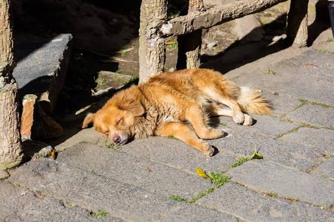

Max
Edad: 2 años
Perro sociable, jugueton y amigable con los demas perros.
Solicitar Adopción Conoce a los peluditos que estan en busqueda de un hogar amoroso
Todos Desparazitados y Esterelizados listos para vivir en casa

Edad: 2 años
Perro sociable, jugueton y amigable con los demas perros.
Solicitar Adopción
Edad: 1 año
Gata tranquila, limpia y con siestas bajo el sol.
Solicitar Adopción
Edad: 3 años
Cariñoso, jugueton, activo y perfecto para una vida atletica.
Solicitar AdopciónEdad: 9 meses
Perro tranquilo y no tan jugueton ideal para personas mayores.
Solicitar Adopcion